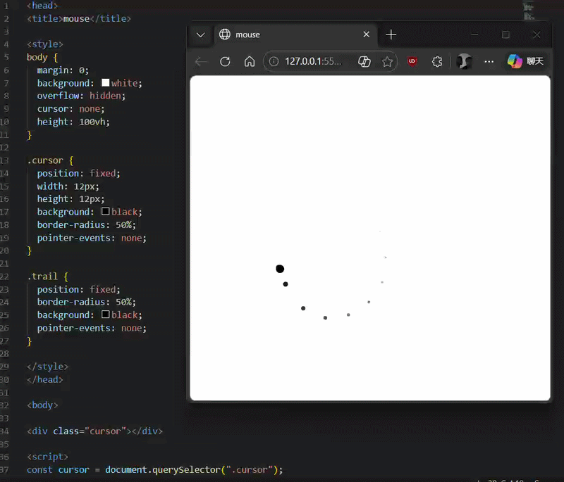
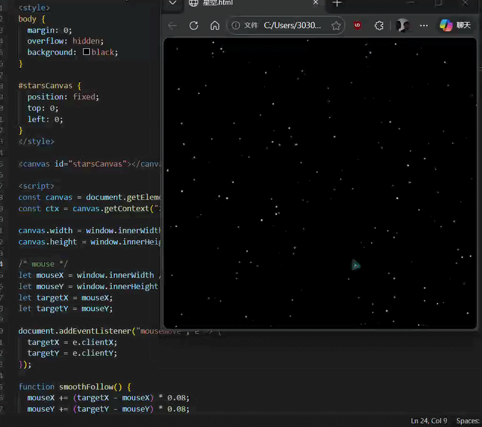
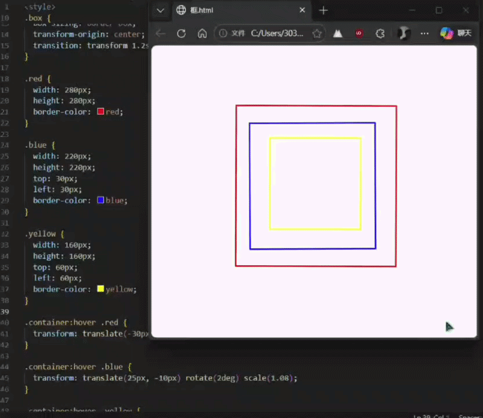
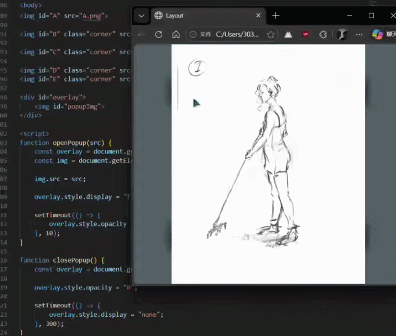
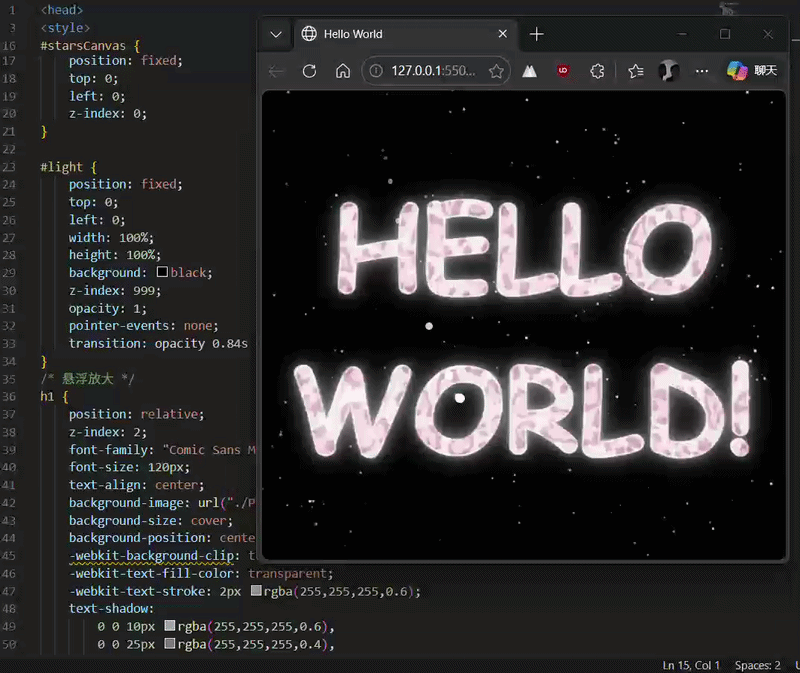
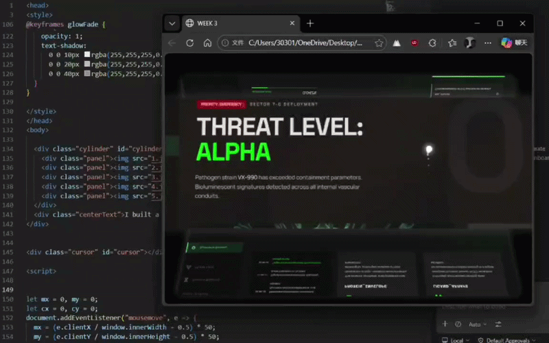

Mouse
My website requires a cool mouse pointer cursor. I plan to add a trailing effect to the mouse. The inspiration for the cursor came from the HTML CHEATSHEET on teacher's website - Easing.

Star
Creating a starry background is quite simple, but I want it to move, like a real 3D environment. I thought of Parallax Scrolling. This effect I have seen in many games, such as "Don't Starve".

Frame
A very "active" button can encourage users to engage more actively. The principle is: 1. Set the movement direction, 2. Return to the original position.

Button
I attempted to create effective jump buttons. I tried adding images, animations, and videos, but the insertion of 3D models seemed to be much easier...

HELLO-WORLD
I combined the previous elements and re-created "HELLO WORLD" - with a starry background, hover effect, and an effective jump button.

AIWEB
We used AI on Stitch to create some beautifully designed website interfaces. Although I don't recommend using AI, I must admit that the work done by AI looks very well done.